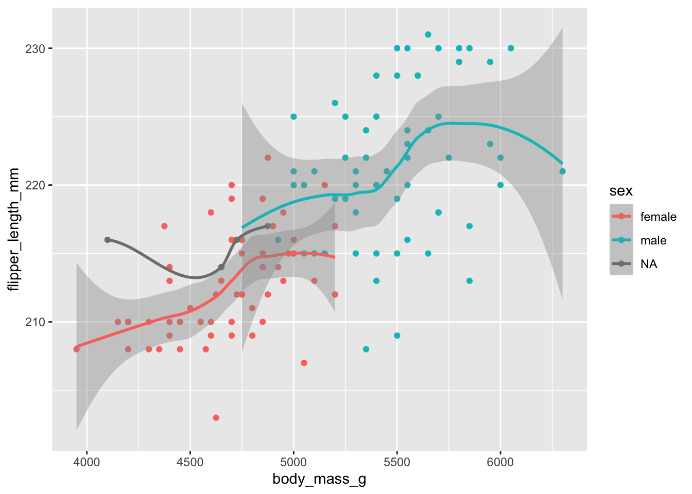

install.packages("palmerpenguins")Plotting 1: Intro to ggplot2
plotting
ggplot2
1 Introduction
In this Code Club semester, we started with 5 sessions on R basics, followed by 5 sessions on tidyverse data wrangling basics. This session will be the first several on data visualization: creating plots with the ggplot2 package.
Session Goals
- Learn the philosophy of coding a graphic.
- Learn the basic template of a ggplot graphic, so you can reuse it for multiple chart types.
- Learn how you can quickly add visual information to a graphic using aesthetics and layers.
2 The ggplot philosophy
We have seen that in R, instead of manually manipulating data with a mouse as you do when editing Excel spreadsheets, we code the operations we want to perform, e.g. using dplyr verbs like select(). In a similar way, when performing visualization, instead of clicking on a chart type, we code the chart in R.
And just as dplyr gives us efficient ways to manipulate data frames, ggplot2 (which is also part of the tidyverse) gives us efficient ways to manipulate charts/plots/graphics1. The gg in ggplot2 stands for grammar of graphics, a systematic approach for designing statistical plots. The idea is to ‘pull apart’ various plots into their component pieces, which leads to the idea of layers.
There’s a learning curve to such a systematic approach, but there are many advantages:
First, every graphic shares a common template. Once you understand this structure you can “say” a lot of different things. The ggplot cheat sheet lists over 40 plot-types, but because ggplot is somewhat of a language in its own right, users can create their own extensions that you can also utilize, adding many more.
Second, because plots are built up using layers, you can gradually build up a graphic of increasing complexity; or on the other hand, take someone else’s code and simplify it by deleting layers. We add layers with
+very similar to how we’ve been piping operations with|>.Third, and this is a more general point that applies to a lot of R code: because the graphic is now a piece of code, it is reusable. Once you have a little library of graphs you’ve made, you can tweak them in various ways to make more. You can also share your code with others, so they can apply the same approach to their data.
3 Our data set

We are going to use a fun üêß data set from the package palmerpenguins. We‚Äôll have to install that package first:
palmerpenguins is a package developed by Allison Horst, Alison Hill and Kristen Gorman, including a data set collected by Dr. Kristen Gorman at the Palmer Station Antarctica, as part of the Long Term Ecological Research Network. It is a nice, relatively simple data set to practice data exploration and visualization in R.
We’ll now load the package, along with the tidyverse (which includes ggplot2):
library(palmerpenguins)
library(tidyverse)── Attaching core tidyverse packages ──────────────────────── tidyverse 2.0.0 ──
✔ dplyr 1.1.4 ✔ readr 2.1.5
✔ forcats 1.0.0 ✔ stringr 1.5.1
✔ ggplot2 3.5.0 ✔ tibble 3.2.1
✔ lubridate 1.9.3 ✔ tidyr 1.3.1
✔ purrr 1.0.2
── Conflicts ────────────────────────────────────────── tidyverse_conflicts() ──
✖ dplyr::filter() masks stats::filter()
✖ dplyr::lag() masks stats::lag()
ℹ Use the conflicted package (<http://conflicted.r-lib.org/>) to force all conflicts to become errorsOnce you’ve loaded that package you will have a data frame called penguins at your disposal — let’s take a look:
penguins# A tibble: 344 × 8
species island bill_length_mm bill_depth_mm flipper_length_mm body_mass_g
<fct> <fct> <dbl> <dbl> <int> <int>
1 Adelie Torgersen 39.1 18.7 181 3750
2 Adelie Torgersen 39.5 17.4 186 3800
3 Adelie Torgersen 40.3 18 195 3250
4 Adelie Torgersen NA NA NA NA
5 Adelie Torgersen 36.7 19.3 193 3450
6 Adelie Torgersen 39.3 20.6 190 3650
7 Adelie Torgersen 38.9 17.8 181 3625
8 Adelie Torgersen 39.2 19.6 195 4675
9 Adelie Torgersen 34.1 18.1 193 3475
10 Adelie Torgersen 42 20.2 190 4250
# ℹ 334 more rows
# ℹ 2 more variables: sex <fct>, year <int># Or glimpse() for a sort of transposed view, so we can see all columns:
glimpse(penguins)Rows: 344
Columns: 8
$ species <fct> Adelie, Adelie, Adelie, Adelie, Adelie, Adelie, Adel…
$ island <fct> Torgersen, Torgersen, Torgersen, Torgersen, Torgerse…
$ bill_length_mm <dbl> 39.1, 39.5, 40.3, NA, 36.7, 39.3, 38.9, 39.2, 34.1, …
$ bill_depth_mm <dbl> 18.7, 17.4, 18.0, NA, 19.3, 20.6, 17.8, 19.6, 18.1, …
$ flipper_length_mm <int> 181, 186, 195, NA, 193, 190, 181, 195, 193, 190, 186…
$ body_mass_g <int> 3750, 3800, 3250, NA, 3450, 3650, 3625, 4675, 3475, …
$ sex <fct> male, female, female, NA, female, male, female, male…
$ year <int> 2007, 2007, 2007, 2007, 2007, 2007, 2007, 2007, 2007…4 A first ggplot2 example
What is the correlation between bill-length and bill-width in these penguin species? Are longer bills also deeper? We can explore this with a scatterplot.

A first plot attempt
The first thing that ggplot2 plot needs from you is a data frame — just like the rest of the tidyverse, ggplot2 is oriented towards data frames. Specifically, the first argument to the ggplot() function is a data frame:
ggplot(data = penguins)
This is not very interesting! But it’s notable that it is something. ggplot() has created a base plot layer.
While the name of the package is ggplot2, the name of the function is just
ggplot().
Our first complete plot
Our initial plotting code was correct but incomplete. Next, we need to specify:
The plot type we want using one of many “geom” functions — e.g., the geom for a scatterplot is
geom_point().Which columns in our data frame to plot in which ways, such along the x and y axes. In ggplot-speak, we are mapping variables to aesthetics, with the aesthetics being things like x and y coordinates as well shape and color.
We can add both these pieces of information in a single additional layer. The operator to add a layer is +, which is the ggplot equivalent of the pipe symbol (|>), and best practice is to place it at the end of the line, just like the pipe. Here then is our complete first plot:
ggplot(data = penguins) +
geom_point(mapping = aes(x = bill_length_mm, y = bill_depth_mm))Warning: Removed 2 rows containing missing values or values outside the scale range
(`geom_point()`).
To recap, the three required ggplot elements that we used are:
- The data: here
penguins - One or more geoms: here
geom_point() - One or more aesthetic mappings: here
x = bill_length_mm, y = bill_depth_mm
Also, note that we provided three pieces of information from our data — a data frame and two column names. After telling ggplot to use the penguins data frame, we can refer to columns in this data frame using their unquoted names.
The ggplot warning above
ggplot warned us that 2 rows were removed because they “containing missing values or values outside the scale range”:
“Missing values”: If this were the case, there must be
NAs in the bill length and/or bill depth columns.“Outside the scale range”: This could happen if we manually set a “scale range”, e.g. restricting axis limits so some of the data can’t be plotted. We didn’t do this and ggplot wouldn’t automatically do it, so this doesn’t apply.
So, there are probably NAs — let’s look for those, starting with the bill length column:
penguins |> filter(is.na(bill_length_mm))# A tibble: 2 × 8
species island bill_length_mm bill_depth_mm flipper_length_mm body_mass_g
<fct> <fct> <dbl> <dbl> <int> <int>
1 Adelie Torgersen NA NA NA NA
2 Gentoo Biscoe NA NA NA NA
# ℹ 2 more variables: sex <fct>, year <int>We indeed get two rows, with NAs for all measurement, so those must have been the two rows ggplot was complaining about.
As for the relationship between bill length and bill depth — this is not very clear, but I guess if you squint your eyes, you can see local positive correlations? We’ll explore this relationship in more detail below.
Each point in the plot has a bill length and an associated bill depth. How does ggplot know which bill lengths to associate with which bill depths? (Click for the answer)
Each point comes from one row in the data frame: so ggplot assumes that the the bill length and bill depth given in one row derive from the same observation (here: the same penguin).
As such, to work with ggplot, your data frame needs to be in a “tidy” format (see our Code Club from a couple weeks ago). If you find yourself struggling to appropriately assign aesthetic mappings, you may have to pivot your data first, most often with apivot_longer().
Exercise 1
Create a scatterplot comparing body mass and flipper length. Does it look like there is any correlation there?
Hints (click here)
Take another look at thepenguins data frame to see which columns contain body mass and flipper length. It’s up to you which you assign to the x axis and the y axis.
Solution (click here)
ggplot(data = penguins) +
geom_point(mapping = aes(x = body_mass_g, y = flipper_length_mm))
5 The power of aesthetics
We saw above that the relationship between bill length and bill depth is not particularly clear, but that there might be some local patterns. Is it possible that these clusters correspond somehow to the three different penguin species: Adelie, Chinstrap, and Gentoo? That is, part of the problem with our original plot may be that we lumped the data from all three species together.
We can explore this by adding a third aesthetic, color. Our current plot maps bill_length_mm to the x aesthetic, and bill_depth_mm to the y aesthetic — now, we’ll add a mapping of species to the color aesthetic:
ggplot(data = penguins) +
geom_point(mapping = aes(x = bill_length_mm,
y = bill_depth_mm,
color = species))
Note that a legend is added automatically! It’s much clearer now that, within each species, there does seem to be a positive correlation between bill length and depth.
Exercise 2
Go back to your body mass/flipper plot from Exercise 1 and color points by species.
There are various aesthetics you can use for a categorical variable like species (see the help for
geom_point()— type?geom_pointto open the help page). One of these aesthetics isshape: try this instead ofcolorand see which you prefer.
Solutions (click here)
Color point by species:
ggplot(data = penguins) + geom_point(mapping = aes(x = body_mass_g, y = flipper_length_mm, color = species))
Try the
shapeaesthetic instead ofcolor:ggplot(data = penguins) + geom_point(mapping = aes(x = body_mass_g, y = flipper_length_mm, shape = species))
6 Syntax variants
Omit the argument names
So far, we’ve been using verbose syntax for clarity, but we can shorten this a bit: instead of…
ggplot(data = penguins) +
geom_point(mapping = aes(x = body_mass_g, y = flipper_length_mm))…we can omit the names of the arguments:
ggplot(penguins) +
geom_point(aes(x = body_mass_g, y = flipper_length_mm))Pipe data into ggplot
You might also prefer to pipe the data frame into ggplot:
penguins |>
ggplot() +
geom_point(aes(x = bill_length_mm, y = bill_depth_mm))The above example adds a line of code to say the same thing, but you might prefer this as it makes abundantly clear what your input data is. This style especially makes sense when you edit a dataframe prior to plotting it:
# Make a plot only for the Adelie Penguin:
penguins |>
filter(species == "Adelie") |>
ggplot() +
geom_point(aes(x = bill_length_mm, y = bill_depth_mm))
When you pipe data into ggplot, remember to switch between
|> and +!
Local vs. global aesthetics
So far, we’ve provided our aesthetic mappings (aes(...)) inside the geom function. However, it is also possible to do this inside the initial ggplot() function call. Compare these two:
# Provide the aesthetic mappings inside geom_point():
penguins |>
ggplot() +
geom_point(aes(x = bill_length_mm, y = bill_depth_mm))
# Provide the aesthetic mappings inside ggplot():
penguins |>
ggplot(aes(x = bill_length_mm, y = bill_depth_mm)) +
geom_point()In the above example, those two variants are functionally equivalent. However, it is possible to add multiple geoms in ggplot — and once you do that, the following becomes important:
- Mappings provided to a specific geom are “local”: they do not carry over to other geoms.
- Mappings provided to
ggplot()are “global”: they apply to all geoms in the plot.
Therefore, if you have multiple geoms, it most often makes sense to put the aesthetics inside ggplot(), but there are exceptions — and it is also possible to specify aesthetics in multiple places. More about this in the next section.
7 Adding geoms, and geom_smooth()
In the scatterplot for bill length vs. depth, there wasn’t a clear overall (across-species) relationship. We can make this even more visually apparent by fitting a line to the data — overlaying another geom in the same plot:
penguins |>
ggplot() +
geom_point(aes(x = bill_length_mm, y = bill_depth_mm, color = species)) +
geom_smooth()`geom_smooth()` using method = 'loess' and formula = 'y ~ x'Error in `geom_smooth()`:
! Problem while computing stat.
ℹ Error occurred in the 2nd layer.
Caused by error in `compute_layer()`:
! `stat_smooth()` requires the following missing aesthetics: x and y.Uh oh! What went wrong here? Can you think of two different ways to solve this? (Click for the answer)
Because we provided local aesthetics to geom_point() only, geom_smooth() has not been informed about any aesthetics, as the error message suggests. We can resolve this either by:
- Providing the same local aesthetics to both geom functions.
- Providing global aesthetics (i.e. to the
ggplot()function). This is the better option.
In our next attempt, we’ll provide the aesthetics globally, that is, we specify them inside the ggplot() function:
penguins |>
ggplot(aes(x = bill_length_mm, y = bill_depth_mm, color = species)) +
geom_point() +
geom_smooth()`geom_smooth()` using method = 'loess' and formula = 'y ~ x'
Fitted lines
By default, the geom_smooth() function doesn’t use classical linear regression to fit the data. Instead it uses locally estimated scatterplot smoothing: loess. The resulting lines snake around and trying to find local best fits to the data. You can request different fit algorithms with the geom_smooth()’s method argument. See ?geom_smooth for details.
Exercise 3
A) Revisit your flipper/body_mass plot once again, and fit lines to each species.
Solution (click here)
penguins |>
ggplot(aes(x = body_mass_g, y = flipper_length_mm, color = species)) +
geom_point() +
geom_smooth()`geom_smooth()` using method = 'loess' and formula = 'y ~ x'
B) Perhaps you think there is too much going on in this plot, with the scatterplot data making the fitted line less clear. Modify your plot so it just shows the fitted line and not the points.
Solution (click here)
This is as easy a removing the geom_point() line:
penguins |>
ggplot(aes(x = body_mass_g, y = flipper_length_mm, color = species)) +
geom_smooth()`geom_smooth()` using method = 'loess' and formula = 'y ~ x'C) (Bonus)
- Pipe your dataset into
filter()to keep only theGentoodata. - Pipe that data into
ggplot()to create a scatterplot with a smoothed-line overlay for just that one species, colored bysex. - In a next attempt, can you get rid of the points for which the sex is unknown (
NA)?
Solution (click here)
- and 2.:
penguins |>
filter(species == "Gentoo") |>
ggplot(aes(x = body_mass_g, y = flipper_length_mm, color = sex)) +
geom_point() +
geom_smooth()`geom_smooth()` using method = 'loess' and formula = 'y ~ x'
- — we add
!is.na(sex)to thefilter()call to remove penguins with unknown sex:
penguins |>
filter(species == "Gentoo", !is.na(sex)) |>
ggplot(aes(x = body_mass_g, y = flipper_length_mm, color = sex)) +
geom_point() +
geom_smooth()`geom_smooth()` using method = 'loess' and formula = 'y ~ x'D) (Bonus) Modify your previous Gentoo penguin plot such that:
- You have a single fitted line for penguins of both sexes
- Points are still colored by sex
Solution (click here)
This will require you to some aesthetics globally (x and y) and the color aesthetic locally, just for geom_point():
penguins |>
filter(species == "Gentoo", !is.na(sex)) |>
ggplot(aes(x = body_mass_g, y = flipper_length_mm)) +
geom_point(aes(color = sex)) +
geom_smooth()`geom_smooth()` using method = 'loess' and formula = 'y ~ x'Footnotes
We use these terms interchangeably.↩︎